X401–X484¶
Euler Line Substitutions & Hirst Inverses
X401–X484 (Euler Line Substitutions & Hirst Inverses) — 16 representative centers (from 84 in collection) constructed on acute reference triangle \((a, b, c) = (5, 6, 7)\) with unit baseline AB = \(1\).¶
X401BAILEY POINT
X402ZEEMAN-GOSSARD PERSPECTOR
X403OF THE ORTHIC TRIANGLE

X404{X2,X3}-HARMONIC CONJUGATE OF X21
X405EULER LINE INTERCEPT OF LINE X1X_6
X406EULER LINE INTERCEPT OF LINE X10X_33
X407CROSSPOINT OF X4 AND X225
X408EULER LINE INTERCEPT OF LINE X73X_228
X409EULER X21-1st-SUBSTITUTION POINT
X410EULER X29-1st-SUBSTITUTION POINT
X411EULER X21-2nd-SUBSTITUTION POINT
X412EULER X29-2nd-SUBSTITUTION POINT
X413EULER X21-3rd-SUBSTITUTION POINT
As a point on the Euler line, X413 has Shinagawa coefficients \((\$aS_{A}\$[(\$aS_{A}\$)^{2} - \$bcS_{B}S_{C}\$] - 2abcFS^{2}, -(\$aS_{A}\$ - abc)[(\$aS_{A}\$)^{2} - \$bcS_{B}S_{C}\$] - 2[\$bcS_{B}S_{C}\$ + \$aS_{A}\$F - abcF]S^{2})\).
X414EULER X29-3rd-SUBSTITUTION POINT
As a point on the Euler line, X414 has Shinagawa coefficients \(([(2E-F)F-S^{2}]FS^{4} -\$abS_{A}S_{B}\$F^{2}S^{2} +\$ab\$F^{2}S^{4}, -[(3E-F)F-S^{2}]FS^{4} -\$ab(S_{A}S_{B})^{3}\$ +2\$abS_{C}^{3}\$FS^{2} -4\$abS_{A}S_{B}\$F^{2}S^{2} -2\$abS_{C}\$[(E+F)^{2}-2S^{2}]FS^{2} -\$ab\$F^{2}S^{4})\).
X415-HIRST INVERSE OF X29
X416-HIRST INVERSE OF X21
X417-CEVA CONJUGATE OF X185
X418-CEVA-CONJUGATE OF X216
X419-HIRST INVERSE OF X25
X420-HIRST INVERSE OF X427
X421-HIRST INVERSE OF X24
X422-HIRST INVERSE OF X28
X423-HIRST INVERSE OF X27
X424-HIRST INVERSE OF X451
X425-HIRST INVERSE OF X21
X426EULER X19-4th-SUBSTITUTION POINT
X427COMPLEMENT OF X22
X428EULER X38-5th-SUBSTITUTION POINT
Let H = X4 and let HaHbHc be the pedal triangle of H in the plane of a triangle ABC. Let
Bc = reflection of Hb in HHc, and define Ca and Ab cyclically;
Cb = reflection of Hc in HHb, and define Ac and Ba cyclically;
Ha = orthogonal projecton of A on BcCb, and define Hb and Hc cyclically.
Then X428 = centroid of triangle HaHbHc. See Antreas Hatzipolakis and Peter Moses, Hyacinthos 27169
X429EULER X58-5th-SUBSTITUTION POINT
X430EULER X81-5th-SUBSTITUTION POINT
X431EULER X283-5th-SUBSTITUTION POINT
X432EULER X155-6th-SUBSTITUTION POINT
As a point on the Euler line, X432 has Shinagawa coefficients \(((E^{2} + 4EF - 4S^{2})F, -E^{3} - 3E^{2}F - 4EF^{2} + 4(E - F)S^{2})\).
X433EULER X159-6th-SUBSTITUTION POINT
As a point on the Euler line, X433 has Shinagawa coefficients \((4(E + F)^{3}F^{2} - E^{2}FS^{2}, (E + F)[4(E + F)^{3}F - (E + 8F)ES^{2}])\).
X434EULER X195-6th-SUBSTITUTION POINT
As a point on the Euler line, X434 has Shinagawa coefficients \((9E^{2}F + 16EF^{2} - 64FS^{2}, -9E^{3} - 23E^{2}F -16EF^{2} + 32(E - 2F)S^{2})\)
X435EULER X399-6th-SUBSTITUTION POINT
As a point on the Euler line, X435 has Shinagawa coefficients \((9E^{2}F + 144EF^{2} - 64FS^{2}, -9E^{3} + 89E^{2}F - 128EF^{2} - 64F^{3} + 32(E - 2F)S^{2})\)
X436EULER X48-7th-SUBSTITUTION POINT
X437EULER X214-7th-SUBSTITUTION POINT
As a point on the Euler line, X437 has Shinagawa coefficients \((2(E+F)^{2}F+10FS^{2}+7\$bcS_{A}\$F-5\$ab\$(E+F)F, (5E-16F)S^{2}-\$abS_{C}^{2}\$ +41\$bcS_{B}S_{C}\$+\$ab\$[(E+F)^{2}-19S^{2}])\).
X438EULER X204-8th-SUBSTITUTION POINT
As a point on the Euler line, X438 has Shinagawa coefficients \((4(E + F)^{2}F^{2} - (E + 3F)FS^{2}, -[4(E - F)F - S^{2}]S^{2})\)
X439EULER X193-9th-SUBSTITUTION POINT
X440COMPLEMENT OF X27
X441COMPLEMENT OF X297
X442COMPLEMENT OF SCHIFFLER POINT
X443COMPLEMENT OF X452
X444EULER LINE INTERCEPT OF LINE X19X_232
As a point on the Euler line, X444 has Shinagawa coefficients \(([\$a\$(E + F) + \$aS_{A}\$ - abc]F,-(E + F)[\$a\$(E + F) + \$aS_{A}\$ + abc])\).
X445EULER X79-10th-SUBSTITUTION POINT
X446CROSSPOINT OF X98 AND X511
X447-HIRST INVERSE OF X27
X448-HIRST INVERSE OF X21
X449-HIRST INVERSE OF X452
X450-HIRST INVERSE OF X4
X451-HIRST INVERSE OF X424
X452-HIRST INVERSE OF X449
X453POINT ALSHAIN
As a point on the Euler line, X453 has Shinagawa coefficients \((2\$aS_{B}S_{C}\$+\$aS_{A}\$(E+2F)-2\$a\$S^{2}-2abcF, -\$aS_{A}\$E+2\$a\$S^{2}+abcE)\).
X454EULER X155-11th-SUBSTITUTION POINT
X455EULER X159-11th-SUBSTITUTION POINT
X456EULER X195-11th-SUBSTITUTION POINT
X457EULER X399-11th-SUBSTITUTION POINT
X458EULER LINE INTERCEPT OF LINE X76X_275
X459-CEVA CONJUGATE OF X4
X460POINT ANTARES
X461EULER LINE INTERCEPT OF LINE X33X_200
As a point on the Euler line, X461 has Shinagawa coefficients \((2F,\$bc\$ - E - F)\).
X462EULER LINE INTERCEPT OF LINE X51X_397
As a point on the Euler line, X462 has Shinagawa coefficients \((3^{1/2}F, -3^{1/2}(E + F) + 2S)\).
X463EULER LINE INTERCEPT OF LINE X51X_398
As a point on the Euler line, X463 has Shinagawa coefficients \((3^{1/2}F, -3^{1/2}(E + F) - 2S)\).
X464EULER LINE INTERCEPT OF LINE X63X_69
X465EULER LINE INTERCEPT OF LINE X216X_395
X466EULER LINE INTERCEPT OF LINE X216X_396
X467EULER LINE INTERCEPT OF LINE X53X_311
X468-LINE CONJUGATE OF X3
X469EULER LINE INTERCEPT OF LINE X92X_264
X470-CROSS CONJUGATE OF X298

X471-CROSS CONJUGATE OF X299
X472-CROSS CONJUGATE OF X303
X473-CROSS CONJUGATE OF X302
X474EULER LINE INTERCEPT OF LINE X10X_56
X475EULER LINE INTERCEPT OF LINE X10X_34
X476TIXIER POINT
X477TIXIER ANTIPODE
X478CENTER OF YIU CONIC
X479-CROSS CONJUGATE OF X279
X480-CEVA CONJUGATE OF X220
X4811st EPPSTEIN POINT
X4822nd EPPSTEIN POINT
X483RADICAL CENTER OF AJIMA-MALFATTI CIRCLES
